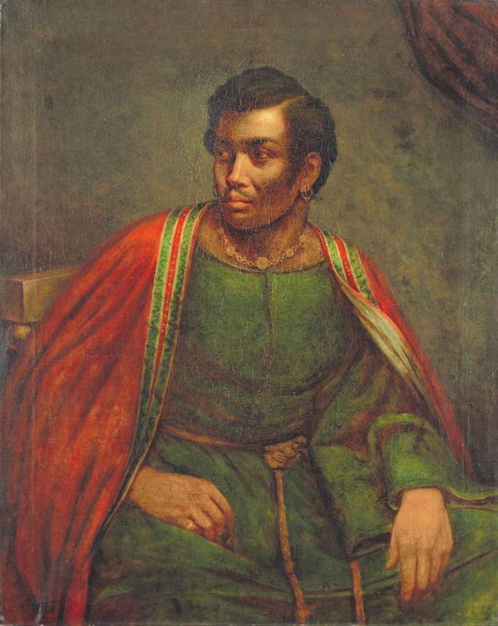
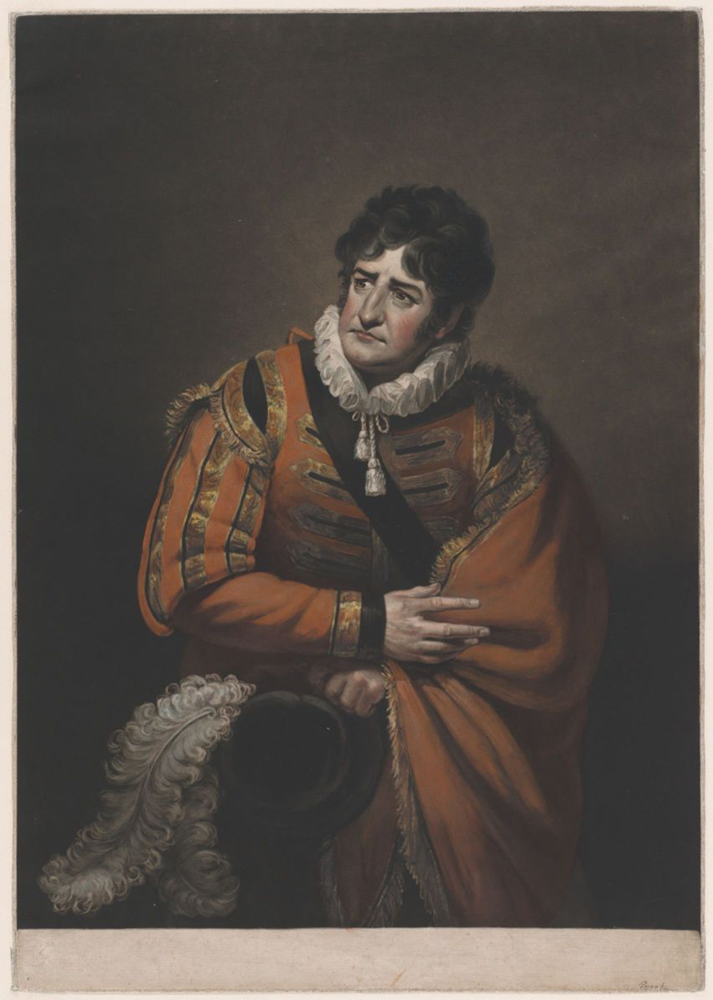
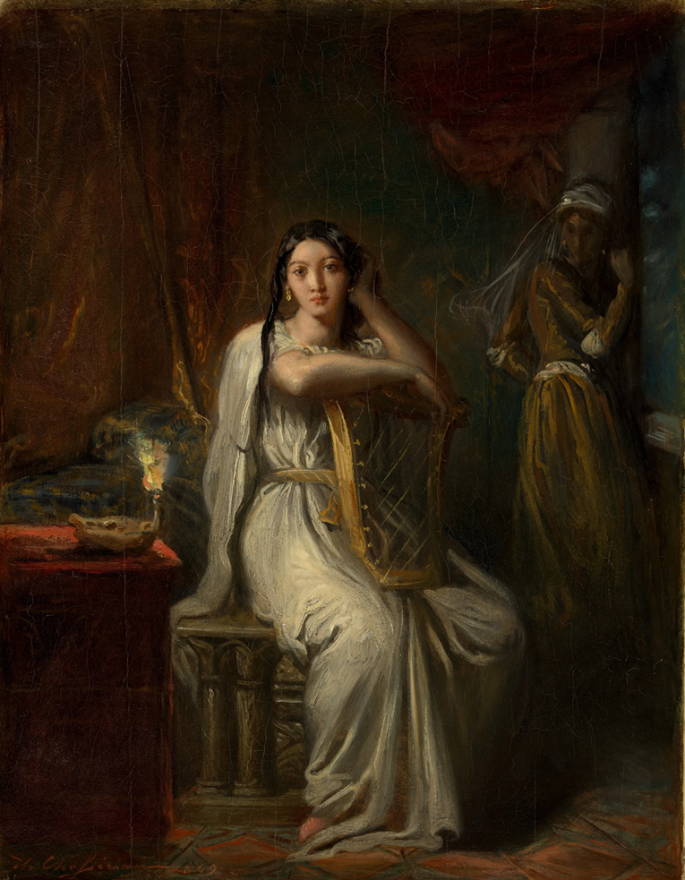
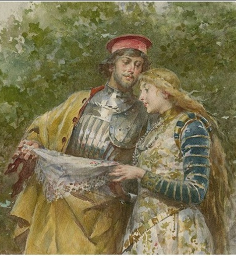
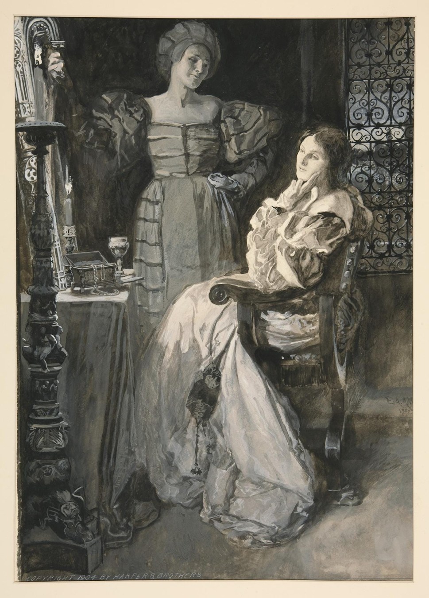
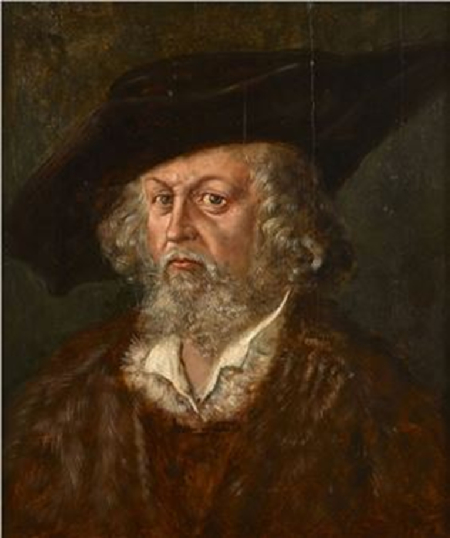
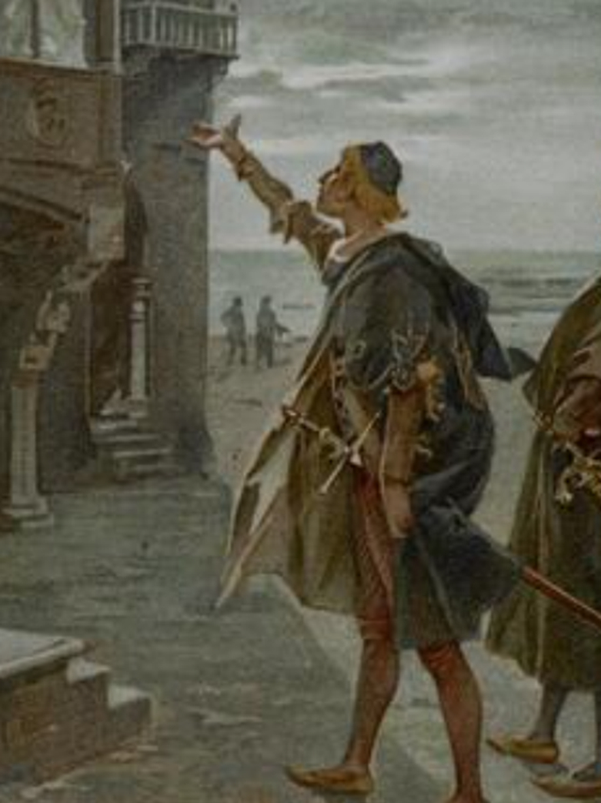

Course Overview
Don't look for Shakespeare in a book.
Classic literature isn't locked in place. It moves, it shifts — it changes with the seasons and the years. That is what makes it 'classic'. It is not classic because it stayed the same, but because it touches something central about the human condition that keeps coming up again and again. Don't think so? Do we still struggle with racism, sexism, toxic power dynamics, manipulative people? Welcome to the world of Othello!
The themes of Othello are still with us today. They still have the power to hurt and harm greatly. But we also have the agency to seek to understand Othello — not as something distant, but Othello as happening today — and to change the outcome.
Course Sections
Context & Themes
Introduction to Othello, its world, and the big ideas that still matter today.
Video Analysis
Comparing Othello to Get Out — manipulation and race across five centuries.
Acts I – III
The web of lies begins. Reading check-ins and Iago's mind map.
Acts IV – V
The tragic fallout. Sexism, toxic masculinity, and what could have changed.
The Soliloquy Twist
Translate a speech into modern language and rewrite the ending.
★ Final Summative Assessment
The Soliloquy Twist — Performance Video
A 2–3 minute recorded performance. Modern language, modern twist, ancient play. Click to see the complete assignment instructions and rubric.
Curriculum
ENG3U — Grade 11 English University Preparation
Reading 1.5
Extend understanding of texts by making rich connections between ideas and personal knowledge, experience, and the world — including tracking Iago's lies.
Reading 1.8
Identify and analyze the perspectives and/or biases evident in texts — evaluated via the Get Out comparison.
Oral Communication 2.3
Communicate orally for a variety of purposes, using language appropriate for the intended audience — evaluated via the Soliloquy Twist video.
Media Studies 3.4
Produce media texts for a variety of purposes and audiences — evaluated via the final interactive digital project.
Learning Goals & Success Criteria
Learning Goals — We are learning to…
- Analyze how characters use manipulation, language, and gaslighting to gain power over others.
- Examine how societal biases — racism, prejudice — affect the characters in the play.
- Communicate our ideas and debate with peers using modern digital tools.
- Creatively adapt Shakespearean text into modern language and change outcomes.
Success Criteria — I can…
- Identify specific quotes where Iago plants "fake news" in other characters' minds.
- Explain how Othello's identity as a Black man in a white society makes him vulnerable.
- Record a clear, thoughtful video response to a discussion prompt.
- Reply to a peer, respectfully challenging or adding to their ideas.
- Translate Elizabethan English into modern slang and perform a subversive soliloquy.
Class 1
Context & Themes
We start with a song — then we meet the play.
🎵 Minds-On Activity · Before We Begin
"Send Them Off!"
by Bastille
But we're talking about the most brilliant mind this world has ever seen
I've got demons running 'round in my head
And they feed on insecurities I have
Won't you lay your healing hands on my chest?
Let your ritual clean
Soak the ropes with your holy water
Tie me down as you read out the words
Set me free from my jealousy
Won't you exorcise my mind? Won't you exorcise my mind?
I want to be free as I'll ever be
Exorcise my mind, help me exorcise my mind
Desdemona, won't you liberate me?
When I'm haunted by your ancient history
Close these green eyes and watch over as I sleep
Through my darkest of dreams
Be the power to compel me, hold me closer than anyone before
Set me free from my jealousy…
I should be thinking 'bout nothing else when I'm with you
Your mind exists somewhere altogether different
It lives in a world where feelings simply cannot be defined by words
Your Task: Bastille's "Send Them Off!" is loosely inspired by Othello. With that in mind, what do you think Othello is going to be about? Use at least three lines in the song to explain your thinking.
Note: Padlet and Google Classroom links will be provided by your teacher for deployment.
Type N.A. to unlock the rest of Class 1 for the purpose of this MOOC assignment. In a real class, you would need to submit a genuine response.
Understanding Othello
Read the No Fear Shakespeare introduction to get your bearings before diving into the play itself.
SparkNotes
No Fear Shakespeare: Othello
Original text alongside plain-English translation →
What Othello Is Really About
Three lenses for the whole course. Expand each one to learn more.
Othello is a Black general in a white Venetian society. His race is used against him at every turn — by Iago, by Brabantio, and eventually by Othello's own internalized doubt. We examine how prejudice functions as a weapon, and how it still operates today.
[Content being developed — check back soon]
Iago is one of literature's great manipulators — he never lies outright, he plants seeds. We study gaslighting, "fake news," and the psychology of the toxic friend through the lens of the play and modern parallels.
[Content being developed — check back soon]
Both Desdemona and Emilia are destroyed by a world that sees them as property. But they respond differently — and Emilia's final act of defiance is one of the most powerful moments in the play.
[Content being developed — check back soon]
RSC Learning Zone
The Royal Shakespeare Company's resource hub — characters, stage directions, acting notes, and historical context.
Visit RSC →Class 2
Video Analysis & Discussion
Othello meets Get Out. The same villain, five centuries apart.
Film · 2017 · Jordan Peele
Get Out — The Sunken Place
In this key scene, Chris discovers that the welcoming world he has entered conceals something far more sinister. The "Sunken Place" is a powerful metaphor for the silencing of Black voices — a person physically present but stripped of all agency and power. As you watch, consider how this mirrors Othello's experience as an outsider in Venice: respected on the surface, but never fully accepted.
Film · Othello
Iago at Work — The Art of Manipulation
This clip illustrates Iago's central technique: he never accuses directly. Instead he plants seeds of doubt, uses half-truths, and watches Othello's own imagination do the rest. Notice how Iago performs loyalty while engineering destruction. This is gaslighting in its most calculated form — the same psychological pattern we see in Get Out's villains.
Film · 1995 · Laurence Fishburne
Othello — Laurence Fishburne
Laurence Fishburne's portrayal brings a particular weight to Othello's position — a Black man of enormous power and accomplishment, yet perpetually made to feel like an outsider. Watch how his confidence visibly erodes as Iago works on him. Kenneth Branagh's Iago is charming, witty, and terrifyingly believable as a loyal friend.
Film · Key Scene
Iago Directly Manipulating Othello
This is the manipulation at its most direct — the famous "handkerchief" plot in motion. Iago presents circumstantial evidence and watches Othello's reason collapse. This scene is the pivot point of the whole play: the moment Othello crosses from doubt into something far more dangerous. Compare the dynamic here to how control operates in Get Out.
Discussion Forum — Class 2 (Evaluated)
"In Jordan Peele's Get Out, power and control are disguised as politeness or 'help.' In Othello, Iago destroys Othello by pretending to be his loyal friend. Compare how the villains in both works use psychological manipulation and racial dynamics to control their victims. Who is the more dangerous type of villain, and why?"
Also copy your answer to the Google Classroom discussion page →
Note: Padlet board and Google Classroom links will be provided by your teacher for deployment.
Class 3
Acts I, II & III — The Web of Lies
Read, then check in. The Director's Cut forms track your thinking act by act.
Othello's themes are heavily directed towards the function of public image and prejudice. Whether this takes the form of heroism, or the functions of racism and jealousy present within the play.
It is important to remember that an overarching theme in this story is both deception and heroism. At the end of everything, Othello is a man of war who has experienced the positives of his career and the consequences of his position in society with those he interacts with. Othello is a married man, yet his marriage dynamic is both crumbling and stable. Despite being constantly kept moving, Desdemona and Othello will always be happiest with each other. Yet Othello's struggle grows much further from his married life, and into society itself. Society rejects Othello for who he is, isolated by the colour of his skin, slowly breaking down as the play progresses. Eventually, this deception breeds into jealousy-tainted justice.
Read the Play
SparkNotes · Free
No Fear Shakespeare: Othello
Side-by-side original and plain English — read each Act here before completing the forms below →
The Outsider
Racism & Prejudice
"From the very first scene, Othello is described in racial terms before he even appears on stage. How does Brabantio's reaction to the marriage reveal the prejudice that will follow Othello throughout the play — and how does this kind of prejudice still show up today?"
The Setup & Sabotage
Reputation & Toxic Friendship
"Reputation in Venice is everything — it shapes how people are treated, trusted, and valued. How does Iago exploit Cassio's one weakness to dismantle his reputation entirely? What does this tell us about how easily a good name can be destroyed, and how hard it is to rebuild?"
The Web of Lies
Gaslighting & Fake News
"Act III is where Iago's masterpiece begins. He never once states that Desdemona is unfaithful — instead he performs concern, hesitates, half-speaks. Why is this kind of manipulation — making someone doubt their own reality — so much more effective than a direct lie? Where do you see this technique used today?"
Iago's Web of Lies — Mind Map
Create a visual mind map of every lie Iago tells and who he tells it to. Draw the connections. How does each lie build on the last? What happens if you remove one strand of the web?
Open Padlet →Class 4
Acts IV & V — The Tragic Fallout
How far can a person fall — and who is responsible?
Moving onto the conclusion of Othello, notice how the themes have grown complex, yet remain heavily intertwined. Deception and trickery destroys the foundations of marriage between Desdemona and Othello. Othello's treatment simply by his race leads to the downfall of his reputation, marriage, and his mental wellness. Acts IV–V show just how far a person can fall apart, no matter their confidence and image.
Consider how our protagonist has changed so far from Act I to Act V. Was his jealousy justified?
The Tragic Fallout
Sexism & Toxic Masculinity
"Desdemona and Emilia both live under men who seek to control them — yet they respond in completely different ways. Desdemona stays loyal to the end; Emilia ultimately defies Iago at the cost of her life. What does each woman's response tell us about the limited choices available to women in this world? And who do you think shows more strength?"
Reflection — Desdemona by Toni Morrison
In Toni Morrison's Desdemona she 'flips the script', removing Iago from the play altogether to allow Desdemona and others to simply "be". This allows for interesting conversations, including giving voice to a minor character in Shakespeare's Othello — Desdemona's Black slave Barbary — giving her voice to even challenge the main characters. Even the character's name, Barbary, is a source of challenge as she states, after pointing out Desdemona doesn't even know her name: "Barbary is what you call Africa. Barbary is the geography of the foreigner, the savage."
Now it's your turn. What would Desdemona's story look like told in her own words? What would Bianca's? Barbary's?
Class 5 · Final Summative
The Soliloquy Twist
Take back the narrative. Rewrite the tragedy.
Othello is an extremely important text that highlights just how prejudice, jealousy, and race can lead to the downward spiral of the common man. Despite the old age of the play, the same themes currently prevail in modern times. The tragic plot contains many lessons individuals of all ages and minds can learn from. However, the age of the text is prevalent when reading. Shakespearean English has become a sort of skill that requires English readers to practice and perfect, which often leaves a large group of English learners.
Your task for your culminating assessment is to take a monologue or soliloquy from Othello and translate it into a modern, easier-to-understand form of English that learners of all kinds can understand and enjoy. However, you must channel your inner Shakespearean and modify the outcome of your section, answering a burning question of your own.
Once completed, you must take inspiration from your own translation and record a video, edit it, and show us your talents as a modern Shakespearean poet.
How to Complete the Assignment
Choose Your Speech
Select one famous soliloquy or monologue from Othello. Good options include Iago plotting his revenge (Act I, Scene 3), Othello's jealousy speech (Act III, Scene 3), or Emilia's speech about how men treat women (Act IV, Scene 3). Read it several times in No Fear Shakespeare until you understand every line.
Translate into Modern Language
Rewrite the entire speech in modern English. Slang is not just allowed — it's encouraged. The goal is a version that a student today would actually say, that captures the same emotion and meaning as the original. You can use the AI Slang Translator in the AI Tools tab to help you draft this.
The Twist — Change the Outcome
This is the creative heart of the assignment. Change the ending of your speech so the character makes a different choice — one that stops racism, sexism, or bullying in its tracks. What if Othello realizes mid-speech that Iago is gaslighting him and calls it out? What if Emilia stands up to Iago earlier? What if Desdemona refuses to accept the version of herself others have created? Answer a burning question the play leaves open.
Record Your Performance
Record a 2–3 minute video of yourself performing your modern, twisted soliloquy. TikTok-style editing, props, costumes, and background music are all welcome. The performance should be expressive and intentional — you're not just reading the words, you're inhabiting the character and the moment you've created.
Rubric
📋 Teacher action required: The rubric for this assignment can be found at the link below. To add it to this page, open the Google Doc, copy the rubric table, and paste the content here to replace this placeholder.
Alternatively, share this link directly with students by adding it as a visible button below.
Submit your video link (YouTube, Google Drive, or OneDrive) and your name below.
Major Characters
Who's Who in Othello
Eight key figures — and what they reveal about power, race, and human nature.

Othello
Protagonist · General of Venice
The general of Venice and a powerful man with heavy influence. A Christian Moor respected as a powerful figure who is unfortunately easy to influence — his race and status make him a primary target for those who aim to bring him down.

Iago
Antagonist · Othello's Ensign
One of the most cunning villains Shakespeare ever created. His deceitful nature directly clashes with Othello's righteousness — and he is responsible for the primary destruction at the heart of the play.

Desdemona
Othello's Wife · Brabantio's Daughter
Originally portrayed as a stereotypical pure and meek supporting character — but inside and throughout the play, we learn of her determination and capability in defending her marriage against her father's will.

Cassio
Othello's Lieutenant
Othello's lieutenant, highly resented by Iago. Cassio's position in the play is used more as a plot driver than for his own character development — he is the catalyst Iago needs.

Emilia
Iago's Wife · Desdemona's Attendant
Iago's wife and attendant to Desdemona — a representative of Iago's distrust personified. Despite their marriage, Emilia prefers to be with Desdemona, distrustful of Iago's antics, which are proved correct in the end.

Brabantio
Senator of Venice · Desdemona's Father
A wealthy Venetian senator and active obstacle between Othello and Desdemona's marriage. A powerful representation of the racial prejudice Othello faces at every level of Venetian society.

Roderigo
Rejected Suitor · Iago's Pawn
A jealous suitor of Desdemona — a rich young man convinced that if he pays Iago enough, Iago can win Desdemona's hand. Frustrated at her marriage to Othello, Roderigo becomes one of the characters Iago uses for his scheme.
Bianca
Cassio's Mistress · Desdemona's Foil
Cassio's mistress and a character designed to complicate a woman's position within the play. While Desdemona plays the supportive, meek, and loyal character, Bianca functions as her foil.
Character images: place files named char-othello.jpg, char-iago.jpg, char-desdemona.jpg, char-cassio.jpg, char-emilia.jpg, char-brabantio.jpg, char-roderigo.jpg, char-bianca.jpg in the /images/ folder. Recommended size: 400 × 400 px, square crop.
Video Resources
The Screening Room
Five essential clips. One conversation across five centuries.
Film · 2017 · Jordan Peele
Get Out — The Sunken Place
Power and control disguised as welcome. Used in Class 2 discussion.
Film · Othello
Iago at Work — Manipulation
Iago's technique in action. The art of planting doubt without stating it.
Film · 1995 · Fishburne
Othello — Laurence Fishburne
The definitive modern adaptation. Confidence eroding in real time.
Film · Key Scene
Iago Directly Manipulating Othello
The handkerchief plot. The pivot point of the entire play.
Theatre · Toni Morrison
Toni Morrison on Writing Desdemona
Morrison explains why she gave Desdemona, Bianca, and Barbary their voices back.
Music · Class 1
Bastille — "Send Them Off!"
The green-eyed monster in song form. Class 1 Minds-On activity.
AI-Powered Tools
Step Inside the Play
Talk to the characters. Break the fourth wall.
Message Othello, Iago, Desdemona, or Emilia — they respond in character, in modern English.
Iago
"I am not what I am."
⚠️ AI-powered — responses generated by Claude AI. Characters speak in modern English, true to the play.
What if Iago had Instagram? The "honest Iago" mask — completely at odds with his scheming.
Loyal AF to my boy Othello 💯
#Venice #JusticeForMe #TotallyNotEvil
Classroom Activity
Iago's posts show his public persona — the honest mask he shows the world. Write 3 Instagram captions Iago might post that seem friendly but hint at scheming underneath. Post them in the Class 3 discussion.
Paste any Shakespearean line and get a modern-slang translation. Practice for your Soliloquy Twist!
Original Shakespeare
Modern Translation
Assessment Overview
How You'll Be Evaluated
Formative check-ins throughout, summative final performance.
Class 1 — Minds-On
Bastille song response — ungraded, unlocks Class 1 content.
Class 2 — Discussion Forum
Compare Get Out and Othello's villains. Post + reply to two classmates on Padlet.
Classes 3–4 — Director's Cut Forms
Check-ins for each act tracking comprehension and critical thinking.
Class 3 — Padlet Mind Map
Visual map of Iago's lies and their connections.
Class 5 — Soliloquy Twist Video
2–3 min performance. Modern translation + subversive twist. See full instructions and rubric in Class 5 tab.